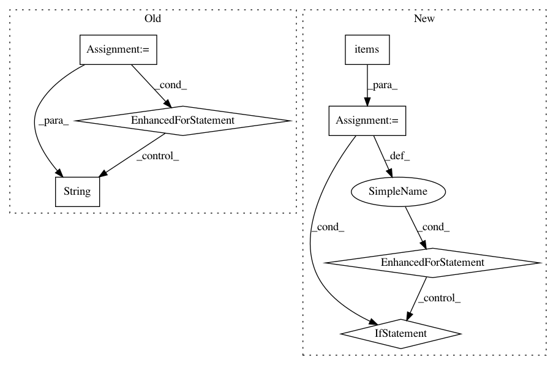

91d4af0d59877cdc19b76854f3c90ed0341a367e,src/python/pants/backend/python/subsystems/pex_build_util.py,PexBuilderWrapper,add_resolved_requirements,#PexBuilderWrapper#Any#Any#,202
Before Change
:param platforms: A list of platform strings to resolve requirements for.
Defaults to the platforms specified by PythonSetup.
for resolved_dist in self.resolve_distributions(reqs, platforms=platforms):
requirement = resolved_dist.requirement
self._log.debug(f" Dumping requirement: {requirement}")
self._builder.add_requirement(str(requirement))
distribution = resolved_dist.distribution
self._log.debug(f" Dumping distribution: .../{os.path.basename(distribution.location)}")
self.add_distribution(distribution)
def _resolve_multi(self, requirements, platforms=None, find_links=None):
python_setup = self._python_setup_subsystem
python_repos = self._python_repos_subsystem
platforms = platforms or python_setup.platforms
After Change
distributions = self._resolve_distributions_by_platform(reqs, platforms=platforms)
locations = set()
for platform, dists in distributions.items():
for dist in dists:
if dist.location not in locations:
self._log.debug(f" Dumping distribution: .../{os.path.basename(dist.location)}")
self.add_distribution(dist)
locations.add(dist.location)
def _resolve_multi(self, interpreter, requirements, platforms, find_links):
Multi-platform dependency resolution for PEX files.
Returns a list of distributions that must be included in order to satisfy a set of requirements.
In pattern: SUPERPATTERN
Frequency: 3
Non-data size: 7
Instances
Project Name: pantsbuild/pants
Commit Name: 91d4af0d59877cdc19b76854f3c90ed0341a367e
Time: 2019-12-10
Author: john.sirois@gmail.com
File Name: src/python/pants/backend/python/subsystems/pex_build_util.py
Class Name: PexBuilderWrapper
Method Name: add_resolved_requirements
Project Name: Scitator/catalyst
Commit Name: 60dfcf812eca79017dced46e1189245c050a3fd6
Time: 2018-12-10
Author: scitator@gmail.com
File Name: utils/factory.py
Class Name: UtilsFactory
Method Name: unpack_checkpoint
Project Name: analysiscenter/batchflow
Commit Name: 222491435716cc587bde288964d65061847ecfc1
Time: 2018-05-04
Author: a.kozhevin@analysiscenter.ru
File Name: dataset/research/workers.py
Class Name: PipelineWorker
Method Name: run_job